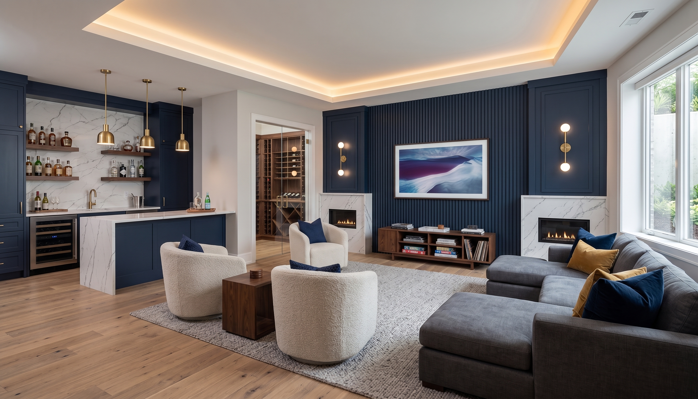

Jacks of All Trades · Community Development
Building Futures,
Rebuilding Detroit.
Through hands-on skilled-trades training and neighborhood revitalization, we turn vacant homes into symbols of hope — and young people into master tradespeople.
One Call. Every Solution.
A Detroit nonprofit · Skip intro →